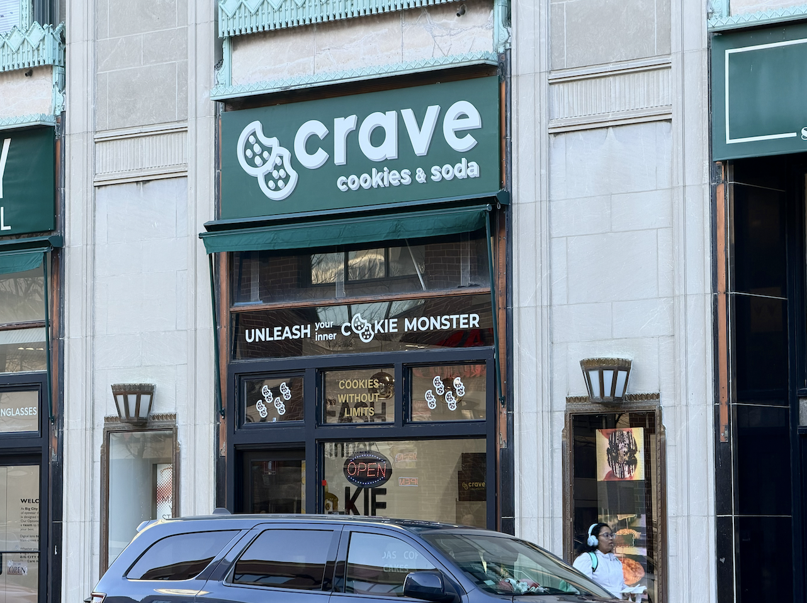

Crave Cookies brings deep-dish style cookies, loaded sodas to Evanston
Gourmet cookie chain Crave Cookies opened its doors in downtown Evanston on Monday, Jan 5., marking a new late-night spot for residents and students to satisfy their sweet tooth.
Located at 809 Church St. and open daily until 10 p.m., the nationwide sensation offers layered, deep-dish style cookies with weekly rotating flavors, alongside loaded sodas, cookie cakes, shakes, and coffee.
This week's lineup of flavors, listed on the company’s official website, features:
- Dubai Chocolate: Chocolate dough with a creamy kunafa pistachio center, layered in milk and white chocolate, topped with crispy toasted kataifi
- Biscoff Explosion: Cookie butter dough stuffed with more cookie butter and white chocolate chips
- Crave Chocolate Chip: Signature dough with Ghirardelli milk chocolate chips, baked fresh daily
- Campfire S'more: Graham cracker dough with toasted marshmallow, milk chocolate, and Hershey’s chocolate
- The Twix: Shortbread dough stuffed with caramel, topped with melted milk chocolate and shortbread crumble
- Cookies 'N' Cream: Cookies-and-cream dough loaded with crushed Oreo and finished with Oreo-inspired frosting

The store joins other late-night cookie spot Insomnia Cookies, which has operated in the downtown area since 2017.
Crave Cookies has expanded to more than nine stores across the Chicagoland area, including Mt. Prospect, Schaumburg, and Lombard, with hundreds more nationwide.
Madelyn Yu is a second-year student at Medill School of Journalism.